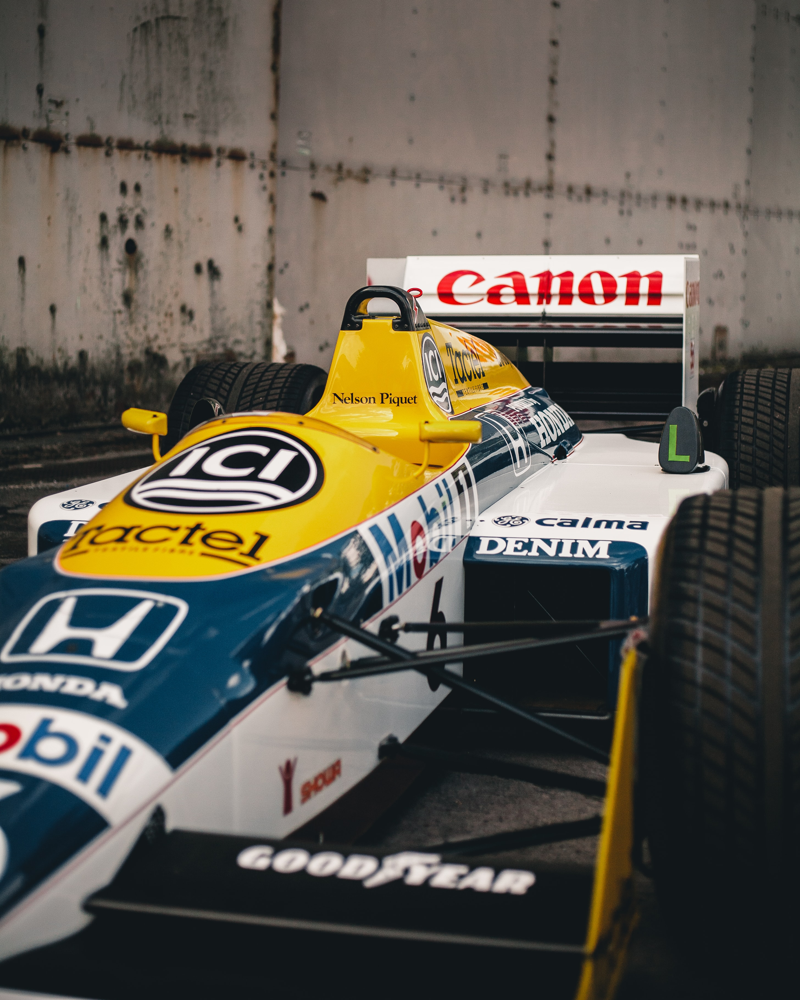

Timeline
1983 - 1992
-

Williams Honda FW11
Since term 1 The Honda racing team were focused on selling their car and bikes. They had quit the Formula 1 activity. However, they wanted to try to join the Formula 1 industry again but, since 1970 the F1 industry had changed massively. For example, the color of cars must need to be a sponsor color, rules, engine regulations and more being Entertainment. So, Honda decided to be the engine supplier. Then, they started from F2 in 1980. Then they got three times champion in 1984 with Williams (a British traditional formula team).
-

McLaren Honda MP4/4
Since the 1984 victory, Honda had struggled to win because of many machine troubles. Then, the Honda F1 team considered the team members. They added their stock car team, so they reviewed their team management and system. Since then, the golden age of Honda was coming. In the 1985 Canadian grand Prix, two Honda machines got the podium 1st and 2nd.
-

MacLaren Honda MP4/5
Honda wanted to increase the number of Japanese formula 1 fans, so Honda tried to hold the F1 Japanese grand Prix in Suzuka. Then, in 1987 the F1 Japanese grand Prix had holed with four Honda machines which were two Williams Honda and two Lotus Honda (Lotus is a British car company). Then Williams Honda got drivers and constructor champions.